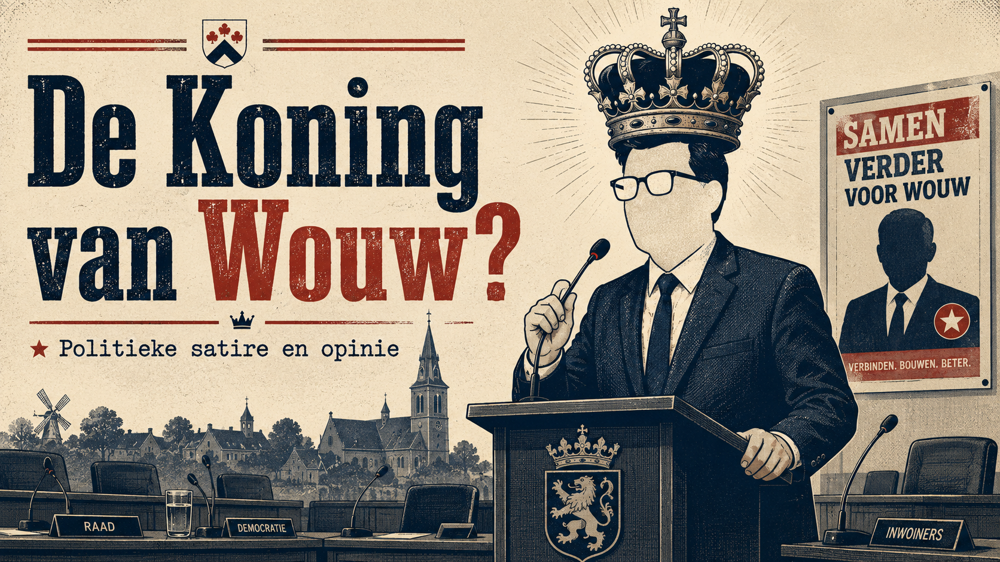

Klopt het feitelijk?
Is het verhaal volledig, of wordt alleen het stukje verteld dat lekker uitkomt?

Satirische politieke opinie
Politieke satire en opinie over lokale politiek, zichtbaarheid en het claimen van dorpssuccessen. Geen officiële website van Eric de Regt, Lijst De Regt of de gemeente Roosendaal.
Intro
In de lokale politiek is zichtbaarheid belangrijk. Je moet weten wat er speelt. Je moet bereikbaar zijn. Je moet inwoners serieus nemen.
Maar er is ook een grens.
Want wanneer wordt betrokkenheid vooral persoonlijke PR? Wanneer wordt “ik heb dit geregeld” een tikje royaal? En wanneer wordt dorpspolitiek vooral een podium waarop één persoon steeds net iets te nadrukkelijk in het midden staat?
Deze site kijkt met satire naar dat mechanisme. Niet omdat Wouw geen vertegenwoordiging verdient. Juist wel.
Wouw verdient volksvertegenwoordigers die samenwerken, eerlijk zijn over resultaten en inwoners niet alleen opzoeken wanneer er een foto, post of campagnebord aan vastzit.
Zichtbaarheid
In Wouw zijn de afgelopen jaren allerlei onderwerpen voorbijgekomen: verkeersveiligheid, woningbouw, erfgoed, voorzieningen, verenigingen, het buurthuis, scholen, wandelpaden, dorpsgezichten, de Markt en de leefbaarheid van het dorp.
Allemaal belangrijk. Allemaal dorpsbelang.
Maar laten we eerlijk zijn: zulke resultaten ontstaan zelden door één raadslid. Daar zitten inwoners achter, verenigingen, ambtenaren, colleges, wethouders, raadsmeerderheden, andere partijen en soms jarenlange voorbereiding.
De claimcheck
Een Facebookpost is nog geen resultaat.
Een foto is nog geen beleid.
Een motie is nog geen uitvoering.
Een stemverklaring is nog geen dorpsvisie.
En een dorpskoning wordt niet gekroond door zichzelf.
Daarom leggen we politieke claims langs drie simpele vragen:
Is het verhaal volledig, of wordt alleen het stukje verteld dat lekker uitkomt?
Was dit echt één persoon, of waren er inwoners, verenigingen, ambtenaren, wethouders en andere partijen nodig?
Niet: wie stond er op de foto? Maar: wie is ermee geholpen?
Zelfreflectie
Er is nog iets ongemakkelijks.
Als een extern onderzoek en het politieke debat daarna laten zien dat de verhouding tussen de Roosendaalse Lijst en de VLP jarenlang ernstig verstoord was, dan kun je daar als buitenstaander makkelijk iets van vinden.
Maar Eric de Regt was geen buitenstaander.
Hij zit sinds 2010 in de Roosendaalse gemeenteraad. Hij was jarenlang actief binnen de Roosendaalse Lijst, stapte later over naar de VLP en was bij beide politieke huizen ook fractievoorzitter.
Wie jarenlang in beide kleedkamers heeft gezeten, moet niet doen alsof de wedstrijd hem niets aangaat.
Dan kun je de geschiedenis niet behandelen alsof je alleen maar toevallig langs de zijlijn stond met een programmaboekje in je hand.
Natuurlijk mag je anderen aanspreken op bestuurscultuur, gedrag en verantwoordelijkheid. Maar wie vervolgens de bal zo hard mogelijk het veld over trapt, zonder zichtbaar naar de eigen positie te kijken, toont vooral weinig zelfinzicht.
Kun je alleen wijzen, of durf je ook terug te kijken naar je eigen rol?
Geloofwaardigheid
Politiek beweegt. Mensen veranderen van inzicht. Partijen veranderen ook.
Daar is niets mis mee.
Maar wie van politiek huis wisselt, daarna een eigen lijst begint en zichzelf presenteert als het stabiele dorpsgeweten, mag daar best kritisch op bevraagd worden.
Niet omdat overstappen verboden is.
Wel omdat geloofwaardigheid in de politiek niet alleen gaat over wat je vandaag zegt, maar ook over het spoor dat je achterlaat.
De kiezer mag best weten waar iemand vandaan komt, welke keuzes iemand eerder maakte en hoe makkelijk een politieke jas wordt verwisseld wanneer die beter zit.
Normen
Integriteit is in de politiek geen decorstuk.
Je kunt niet streng zijn op anderen en soepel worden zodra het je eigen kring raakt.
Rond het lekken van vertrouwelijke rapporten over de bestuurscultuur en de uitkoop van de Poolse supermarkt kwam Lijst De Regt zelf stevig in beeld. De gemeenteraad sprak uiteindelijk unaniem een sanctie uit tegen raadslid Gerard de Backer van Lijst De Regt.
Daar mag je politiek iets van vinden. Sterker nog: daar móét je politiek iets van vinden.
Wie anderen graag langs de meetlat legt, moet er niet verbaasd van opkijken als die meetlat ook een keer wordt omgedraaid.
De vraag is dan niet alleen of iemand juridisch gelijk probeert te krijgen.
De vraag is vooral of iemand politiek moreel leiderschap laat zien.
Excuses aanbieden is één ding.
Daarna vooral de procedure, timing en beeldvorming centraal zetten, is iets anders.
Campagne
Campagne voeren hoort erbij.
Posters, foto’s, berichten, bezoekjes, handen schudden: allemaal prima.
Maar lokale politiek wordt ongemakkelijk wanneer inwoners vooral figuranten worden in iemands persoonlijke zichtbaarheid.
Wouw is geen decor.
Verenigingen zijn geen campagnemateriaal.
Dorpssuccessen zijn geen persoonlijke trofeeënkast.
En inwoners zijn meer dan likes onder een foto.
De vraag
Dat is uiteindelijk de enige vraag die telt.
Niet: wie riep het hardst?
Niet: wie stond het vaakst in de krant?
Niet: wie claimde het slimst achteraf?
Niet: wie had de grootste poster?
Wat is er echt bereikt?
Wie heeft eraan meegewerkt?
Is het dorp ermee geholpen?
En is het verhaal eerlijk verteld?
Want Wouw verdient geen dorpspolitiek als solovoorstelling.
Wouw verdient samenwerking, inhoud en eerlijkheid.
Afsluiting
Like gerust een foto. Hang gerust een poster op. Drink gerust koffie met een kandidaat. Luister gerust naar mooie woorden over dorpsbelang.
Maar kijk daarna ook even verder.
Uiteindelijk gaat lokale politiek niet om wie zichzelf het vaakst laat zien. Het gaat om wie het dorp echt verder helpt.
Bronnen en context
Onderstaande punten zijn bedoeld als plek voor links naar openbare bronnen, raadsinformatie en journalistieke berichtgeving. Vul de concrete links zorgvuldig aan voordat de pagina breed wordt verspreid.